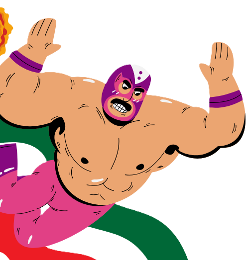
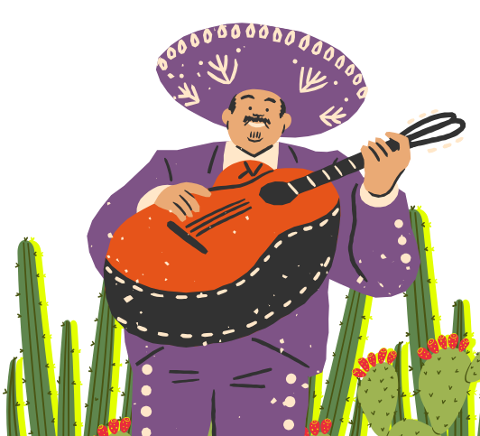

En septiembre de 1810, el eco de una campana marcó el inicio de un movimiento que cambiaría el destino de toda una nación. Acompaña a héroes y heroínas en la gesta heroica que dio origen al México independiente. Explora los pasajes históricos, descubre documentos fundamentales y revive los momentos de valentía, sacrificio y esperanza que nos dieron patria e identidad.
